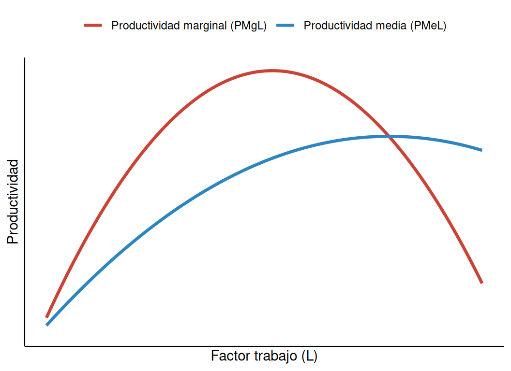
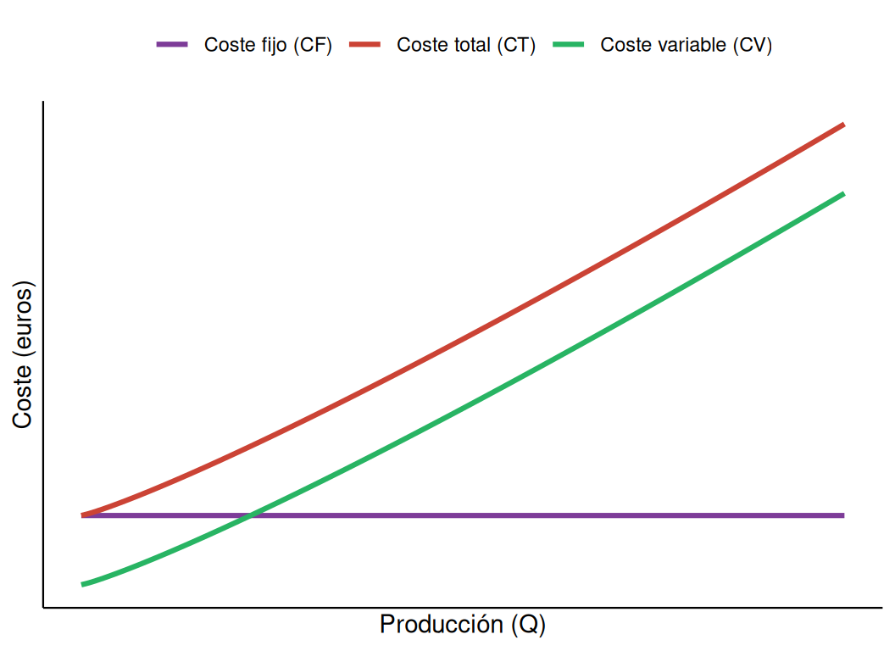
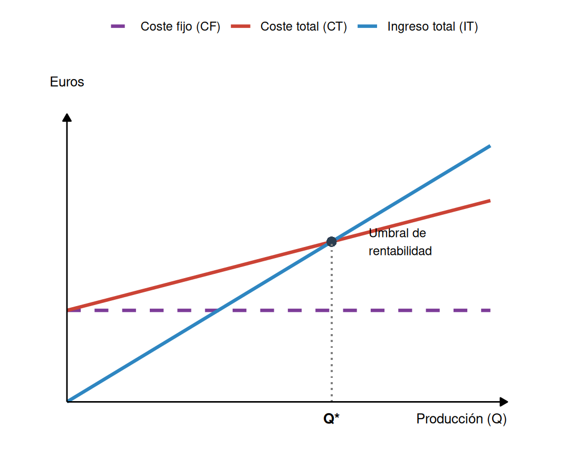

| Objetivos cuantitativos (medibles) | Objetivos cualitativos (estratégicos) |
|---|---|
| Maximización del beneficio | Satisfacción y fidelización del cliente |
| Creación de valor para el accionista | Imagen corporativa y reputación |
| Minimización de costes | Calidad del producto o servicio |
| Crecimiento y cuota de mercado | Clima laboral y desarrollo del capital humano |
| Captación de clientes | Consolidación, supervivencia y RSC |
4 La empresa y la producción
4.1 Los sectores económicos y la interdependencia productiva
La actividad económica se clasifica tradicionalmente en tres grandes sectores. El sector primario comprende las actividades de obtención directa de recursos de la naturaleza, sin transformación sustancial: agricultura, ganadería, pesca, silvicultura y minería. El sector secundario agrupa las actividades de transformación de materias primas en bienes semielaborados o finales: la industria manufacturera y la construcción. El sector terciario o de servicios engloba las actividades que no generan bienes tangibles, sino que satisfacen necesidades mediante servicios: comercio, transporte, turismo, servicios financieros, sanidad, educación o administración pública.
Ningún sector opera de forma aislada: la producción de cualquier bien final exige la concurrencia de los tres. La industria textil, por ejemplo, necesita materias primas agrícolas como el algodón (sector primario), tintes de la industria química (sector secundario) y soporte logístico y comercial (sector terciario) para que el producto llegue al consumidor. Esta interdependencia explica por qué las perturbaciones en un sector estratégico se transmiten en cadena a toda la economía: un encarecimiento súbito del petróleo eleva los costes de transporte, encarece los fertilizantes agrícolas y presiona los costes de fabricación en toda la economía.
NotaDefinición
La terciarización es la transformación estructural que caracteriza a las economías desarrolladas, con un peso creciente del sector servicios tanto en el PIB como en el empleo, que supera habitualmente el 70-75 % de la población ocupada.
A medida que una economía se desarrolla, su estructura productiva evoluciona: en la fase preindustrial predomina el sector primario, porque la baja mecanización exige mucha mano de obra; la industrialización desplaza a los trabajadores del campo a la industria mediante el éxodo rural; y en la fase posindustrial, el aumento de la productividad agraria e industrial libera recursos hacia los servicios, mientras que la renta creciente demanda más servicios de ocio, salud, educación y finanzas.
4.2 La empresa y sus funciones económicas
NotaDefinición
La empresa es la unidad económica básica de producción encargada de combinar de forma organizada los factores productivos —tierra, trabajo y capital—, bajo la dirección del empresario, con el propósito de generar bienes y servicios y colocarlos en el mercado bajo condiciones de riesgo e incertidumbre.
La empresa cumple varias funciones. La creación de valor: no se limita a transformar físicamente materias primas, sino que añade utilidad a los bienes para hacerlos más aptos para satisfacer necesidades, actuando sobre cuatro dimensiones —de forma (transformar insumos en un producto más funcional), de lugar (trasladarlo hasta donde se necesita), de tiempo (ponerlo a disposición cuando se necesita) y de propiedad (facilitar su transferencia al comprador)—. La asunción de riesgo: el empresario paga por adelantado a los factores de producción —salarios, alquileres, proveedores— antes de vender el producto, sin saber con certeza cuáles serán sus ingresos futuros. La función social y distributiva: la empresa genera empleo, canaliza rentas a las familias y financia al Estado mediante impuestos. Y la coordinación del trabajo: como ya observó Adam Smith, dividir un proceso productivo complejo en tareas simples asignadas a trabajadores especializados —la división del trabajo— multiplica la productividad, y la empresa es quien organiza y sincroniza esos esfuerzos individuales.
NotaDefinición
El valor añadido es la diferencia entre el valor de la producción final de una empresa y el coste de las materias primas y consumos intermedios que ha adquirido a otros proveedores.
\[\text{Valor añadido} = \text{Valor de la producción} - \text{Coste de los consumos intermedios}\]
4.2.1 Los objetivos de la empresa
Las empresas no persiguen un único objetivo, sino un conjunto articulado de metas condicionadas por sus distintos grupos de interés —accionistas, directivos, trabajadores, clientes, proveedores y sociedad—.
4.3 El proceso productivo, la tecnología y la eficiencia
NotaDefinición
El proceso productivo es el conjunto de operaciones técnicas mediante las cuales se transforman unos recursos o entradas (inputs: tierra, trabajo y capital) en bienes finales o intermedios (outputs), aplicando una tecnología determinada.
La tecnología es el estado de los conocimientos técnicos y organizativos que determina cómo se combinan los factores para obtener un volumen de producción. Un mismo bien puede fabricarse con técnicas intensivas en trabajo o intensivas en capital.
Para elegir entre distintas técnicas disponibles, la teoría económica distingue dos criterios sucesivos. Una técnica es técnicamente eficiente si obtiene la máxima producción posible con una dotación fija de factores, o si produce una cantidad fija empleando la menor cantidad de insumos posible, sin desperdiciar recursos. Si dos técnicas producen lo mismo pero una usa más de un factor y menos de otro, ninguna domina a la otra: ambas son técnicamente eficientes y hay que recurrir a un segundo criterio. Una técnica es económicamente eficiente si, entre todas las técnicamente eficientes, permite obtener la producción deseada al mínimo coste monetario, dados los precios de mercado de los factores:
\[CT = (w \times L) + (r \times K)\]
donde \(w\) es el precio del trabajo (salario) y \(r\) el precio del capital.
TipEjercicio resuelto: elección de la técnica productiva
Una empresa evalúa cinco técnicas para fabricar un lote de 1000 unidades. El salario por unidad de trabajo es \(w = 15\) € y el coste unitario de capital es \(r = 10\) €.
| Técnica | Trabajo (L) | Capital (K) | Producción | Eficiencia técnica |
|---|---|---|---|---|
| A | 7 | 4 | 1000 | No (usa más L que C con igual K) |
| B | 4 | 6 | 1000 | No (dominada por D) |
| C | 4 | 4 | 1000 | Sí |
| D | 3 | 5 | 1000 | Sí |
| E | 20 | 1 | 1000 | Sí |
Solución: de las técnicas técnicamente eficientes (C, D, E), se calcula el coste de cada una:
- \(CT_C = (4 \times 15) + (4 \times 10) = 100\) €
- \(CT_D = (3 \times 15) + (5 \times 10) = 95\) € ← mínimo coste
- \(CT_E = (20 \times 15) + (1 \times 10) = 310\) €
La empresa elegirá la técnica D, por ser la única que cumple a la vez los criterios de eficiencia técnica y económica.
4.4 La productividad y su medición
Conviene no confundir producción con productividad. La producción (\(Q\)) es una magnitud absoluta: el volumen total de bienes elaborados. La productividad es una magnitud relativa: el cociente entre lo producido y los factores empleados para producirlo.
\[\text{Productividad} = \frac{\text{Producción (output)}}{\text{Factores empleados (input)}}\]
La productividad media del trabajo es \(PMe_L = Q/L\): el promedio de unidades producidas por cada trabajador. La productividad marginal del trabajo es \(PMg_L = \Delta Q / \Delta L\): lo que aporta a la producción la última unidad de trabajo incorporada.
ImportanteLa ley de los rendimientos marginales decrecientes
Si se añaden sucesivas unidades de un factor variable (trabajo) a una dotación fija de otro factor (capital), la producción total aumenta inicialmente a una tasa creciente, pero superado un determinado nivel, los incrementos de producción son cada vez menores, hasta poder llegar a ser nulos o negativos.
La causa es la saturación del factor fijo: al principio, pocos trabajadores infrautilizan las instalaciones, y la especialización permite que cada nuevo trabajador aporte más que el anterior. Pero al seguir incorporando mano de obra sin ampliar las instalaciones, los trabajadores empiezan a estorbarse entre sí y a disputarse el uso de la maquinaria, lo que reduce el aporte de cada nuevo empleado.

Cuando la productividad marginal es superior a la media, la media crece, porque el último trabajador incorporado aporta más que el promedio anterior; cuando la marginal es inferior a la media, la media decrece. Por eso la curva de productividad marginal corta a la de productividad media exactamente en su punto máximo, llamado óptimo técnico.
TipEjercicio resuelto: cálculo de productividades
Una empresa produce 800 unidades con distintas combinaciones de trabajo y capital. Con la técnica A (3 trabajadores, 4 máquinas): \(PMe_L = 800/3 \approx 266{,}7\) unidades por trabajador, y \(PMe_K = 800/4 = 200\) unidades por máquina. La técnica A maximiza el rendimiento por trabajador, aunque no necesariamente sea la más barata: para saberlo haría falta compararla económicamente con las demás técnicas disponibles, como en el ejercicio anterior.
El crecimiento de la productividad —motor del crecimiento económico y de los salarios reales a largo plazo— depende de tres factores: la acumulación de capital humano (educación y formación continua), la acumulación de capital físico (más y mejores equipos por trabajador) y el progreso técnico, que permite obtener más producción recombinando los mismos factores mediante la investigación (generación de nuevo conocimiento), el desarrollo (su aplicación práctica en prototipos) y la innovación (su introducción exitosa en el mercado).
4.5 Los rendimientos a escala
A diferencia del corto plazo —donde coexisten factores fijos y variables—, en el largo plazo todos los factores son variables: la empresa puede modificar la dimensión completa de su planta. Los rendimientos a escala miden cómo varía la producción cuando todos los factores aumentan en la misma proporción.
| Tipo | Condición | Causa habitual |
|---|---|---|
| Crecientes | La producción crece más que proporcionalmente que los factores | Especialización directiva, indivisibilidades tecnológicas, compras a gran escala |
| Constantes | La producción crece en la misma proporción que los factores | Réplica de una unidad productiva idéntica, sin sinergias ni fricciones |
| Decrecientes | La producción crece menos que proporcionalmente que los factores | Disfunciones de gestión, burocracia interna, pérdida de control operativo |
4.6 La estructura de costes de la empresa
Los costes de producción reflejan la valoración monetaria de los recursos consumidos. El coste fijo (CF) procede del uso de factores fijos y no depende del nivel de producción: la empresa lo soporta incluso si no produce nada. El coste variable (CV) varía directamente con la producción. El coste total (CT) es la suma de ambos:
\[CT = CF + CV\]
| Tipo de coste | Ejemplo | Por qué es de ese tipo |
|---|---|---|
| Coste fijo | Alquiler del local | Se paga igual aunque la empresa no produzca nada |
| Coste fijo | Sueldos del personal indefinido | No varía a corto plazo con el volumen de producción |
| Coste fijo | Amortización de la maquinaria | El desgaste del equipo se imputa por periodo, no por unidad |
| Coste variable | Materias primas | Cada unidad adicional consume más materia prima |
| Coste variable | Comisiones por venta | Se pagan por unidad efectivamente vendida |
| Coste variable | Envases y embalajes | Cada unidad vendida necesita su propio envase |

A partir de estos costes se calculan los costes unitarios. El coste medio (CMe) es el coste imputable a cada unidad producida:
\[CMe = \frac{CT}{Q} = CFMe + CVMe\]
El coste fijo medio (\(CFMe = CF/Q\)) desciende de forma continua a medida que crece la producción, porque los costes fijos se reparten entre más unidades —un fenómeno llamado disolución de los costes fijos—. El coste marginal (CMg) es el incremento del coste total al producir una unidad adicional:
\[CMg = \frac{\Delta CT}{\Delta Q}\]
Existe una relación inversa entre productividad y coste: cuando la productividad marginal del trabajo aumenta, el coste marginal disminuye, porque cada nueva unidad requiere menos horas de trabajo; cuando empieza a operar la ley de rendimientos decrecientes, el coste marginal se dispara. El punto en el que el coste medio alcanza su valor mínimo —donde \(CMg = CMe\)— se llama óptimo de explotación.
NotaDefinición
El coste variable unitario (CVu) es el coste variable que corresponde a cada unidad producida:
\[CVu = \frac{CV}{Q}\]
Cuando los costes variables son proporcionales a la producción —el supuesto habitual para calcular el umbral de rentabilidad—, el CVu es constante para cualquier nivel de producción, y el coste variable total puede escribirse simplemente como \(CV = CVu \times Q\).
4.7 Ingresos, beneficio y umbral de rentabilidad
El ingreso total (IT) es el dinero que obtiene la empresa por vender su producción a un precio de mercado dado:
\[IT = P \times Q\]
El beneficio (Π) es la diferencia entre el ingreso total y el coste total:
\[\Pi = IT - CT\]
NotaDefinición
El umbral de rentabilidad (o punto muerto) es el nivel de producción en el que el ingreso total iguala exactamente al coste total (\(IT = CT\), \(\Pi = 0\)): la empresa cubre todos sus costes pero no obtiene beneficio ni pérdida.
Por debajo del umbral de rentabilidad, el precio de venta es inferior al coste medio (\(P < CMe\)) y la empresa incurre en pérdidas. Por encima, el precio supera al coste medio (\(P > CMe\)) y la empresa obtiene beneficio.
4.7.1 El cálculo del umbral de rentabilidad
Si suponemos que los costes variables son proporcionales a la producción —es decir, que el CVu es constante—, el coste total es una función lineal de \(Q\):
\[CT = CF + CVu \times Q\]
Podemos entonces calcular el umbral de rentabilidad de forma directa, sin necesidad de construir una tabla, partiendo de la propia definición de beneficio e imponiendo que sea igual a cero:
\[\Pi = IT - CT = 0\]
Sustituyendo \(IT\) por \(P \times Q\) y \(CT\) por \(CF + CVu \times Q\):
\[P \times Q - (CF + CVu \times Q) = 0\]
Agrupando los términos que dependen de \(Q\):
\[Q(P - CVu) = CF\]
Y despejando \(Q\), obtenemos la cantidad de equilibrio \(Q^*\):
\[\boxed{Q^* = \frac{CF}{P - CVu}}\]
A la diferencia \((P - CVu)\) se la llama margen de contribución unitario: es la parte del precio de cada unidad que, una vez cubierto su propio coste variable, queda disponible para ir cubriendo los costes fijos y, superado el umbral, generar beneficio.
TipEjercicio resuelto: cálculo directo del umbral de rentabilidad
Una empresa tiene unos costes fijos de 2000 € mensuales. Cada unidad que produce le cuesta 15 € en materiales y mano de obra directa (\(CVu = 15\) €), y la vende a 35 €. ¿Cuál es su umbral de rentabilidad?
Solución:
\[Q^* = \frac{CF}{P - CVu} = \frac{2000}{35 - 15} = \frac{2000}{20} = 100 \text{ unidades}\]
Con 100 unidades al mes, la empresa cubre exactamente sus costes (\(IT = CT = 3500\) €). Cada unidad vendida por debajo de esa cifra genera pérdidas; cada unidad por encima genera 20 € de beneficio —su margen de contribución—.

ImportanteCómo leer este tipo de gráfico
El coste fijo es siempre una línea horizontal, porque no depende de cuánto se produzca. El coste total nace justo encima, en el propio coste fijo —a producción cero, el coste total coincide con el coste fijo—, y a partir de ahí sube con una pendiente igual al CVu. El ingreso total, en cambio, nace en el origen: si no se vende nada, no hay ingreso. El punto en el que la recta de ingresos cruza a la de costes totales es, precisamente, el umbral de rentabilidad: a la izquierda de ese punto, la recta de costes va por encima de la de ingresos y hay pérdidas; a la derecha, ocurre lo contrario y hay beneficio.
Este ejercicio es la versión simplificada —con un CVu constante— del análisis que vimos antes con la tabla de productividades, donde el coste por unidad variaba porque la productividad de cada trabajador adicional no era la misma. Ambos enfoques calculan lo mismo, el umbral de rentabilidad, pero el algebraico es mucho más rápido cuando los costes son razonablemente lineales, y el de tabla resulta más adecuado cuando la productividad cambia de forma apreciable con cada trabajador, como ocurre a corto plazo por la ley de rendimientos decrecientes.
TipEjercicio resuelto: productividad, costes y umbral de rentabilidad
Una empresa tiene un coste fijo diario de 50 €, paga un salario de 100 € por trabajador contratado, y vende su producto a 10 € la unidad.
| Trabajadores (L) | Producción (Q) | Coste fijo | Coste variable | Coste total | Ingreso total | Beneficio (Π) |
|---|---|---|---|---|---|---|
| 0 | 0 | 50 € | 0 € | 50 € | 0 € | −50 € |
| 1 | 10 | 50 € | 100 € | 150 € | 100 € | −50 € |
| 2 | 25 | 50 € | 200 € | 250 € | 250 € | 0 € (umbral) |
| 3 | 45 | 50 € | 300 € | 350 € | 450 € | +100 € |
| 4 | 55 | 50 € | 400 € | 450 € | 550 € | +100 € |
| 5 | 60 | 50 € | 500 € | 550 € | 600 € | +50 € |
| 6 | 60 | 50 € | 600 € | 650 € | 600 € | −50 € |
Lectura del ejercicio: con 2 trabajadores se alcanza el umbral de rentabilidad (\(IT = CT = 250\) €); por debajo, las pérdidas se deben al peso de los costes fijos no amortizados. Con 3 trabajadores se alcanza el óptimo técnico (máxima productividad marginal) y el mayor beneficio. A partir de 5 trabajadores opera la ley de rendimientos decrecientes: cada trabajador adicional aporta cada vez menos producción, hasta que con 6 trabajadores la producción deja de crecer y con un séptimo llegaría a reducirse, hundiendo el beneficio de nuevo en pérdidas.